Home
Sign In
Register
Example
Pricing
Contact
Chris Amaya
Contact
Education:
George Mason University | Art and Visual Technology - Graphic Design
Experience:
Chris is known for his reseilience in a variety of fields through a wide range of accomplishments, some of which include:
Designs for Apple's website every year.
Had McDonald's with Pikotaro (Pen Pineapple Apple Pen Guy).
Took the portrait of George Washington.
Recorded and edited the "Baby Shark" music video, which is now the most viewed video on Youtube
Below, you can see some of Chris' work.
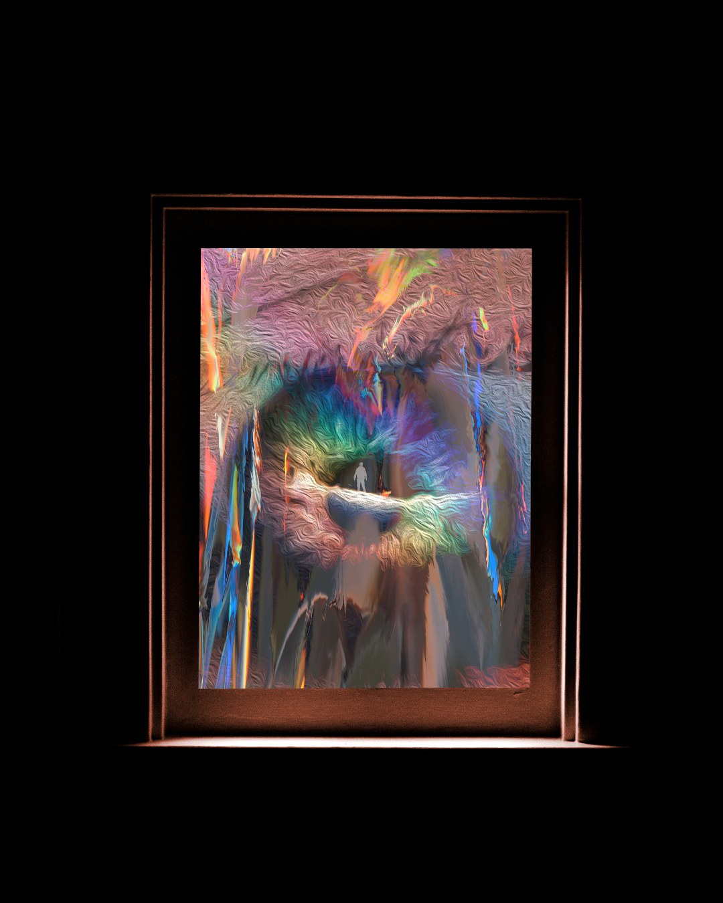
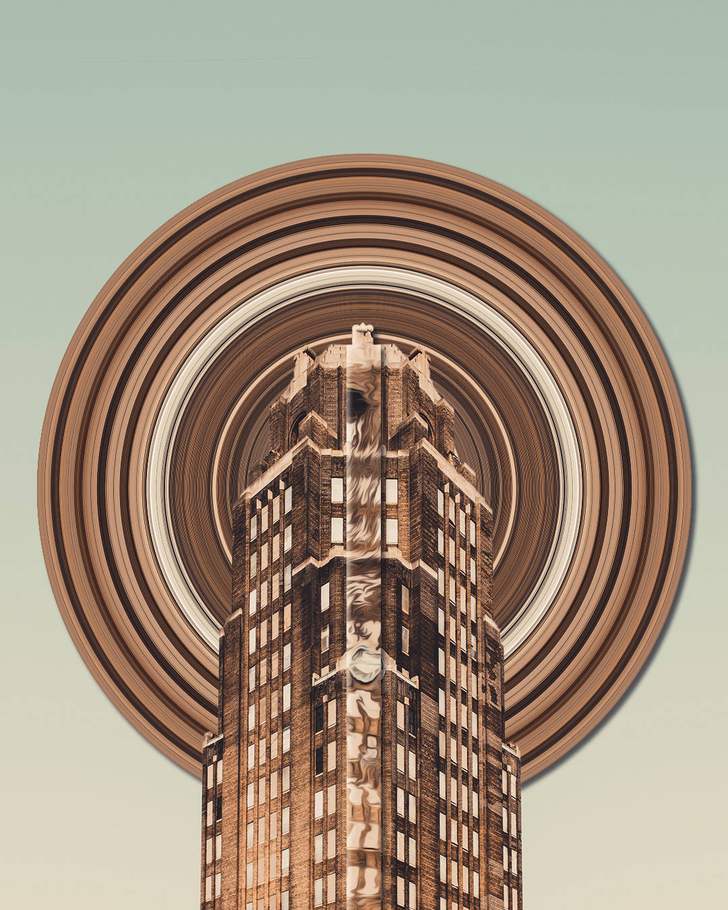
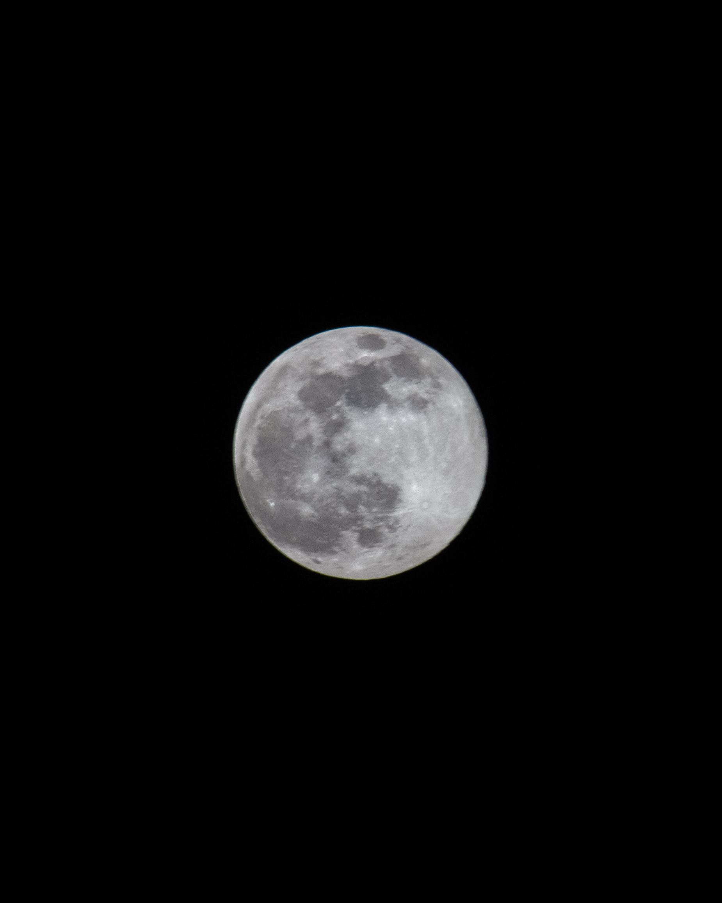
Chris' Website


 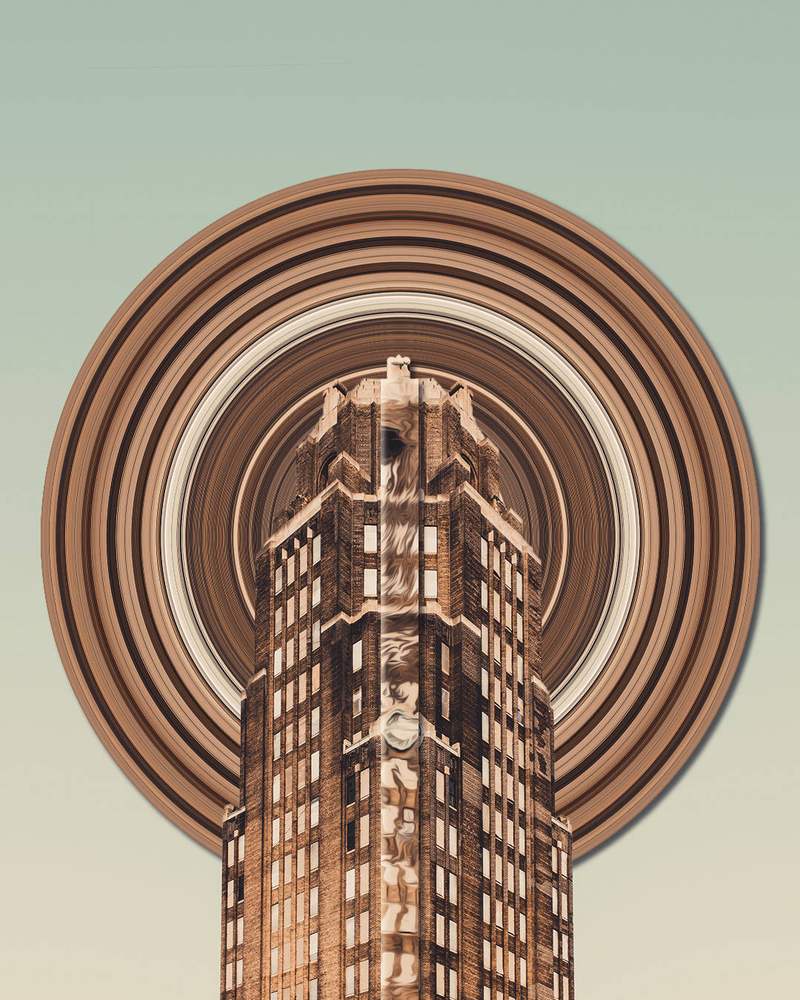
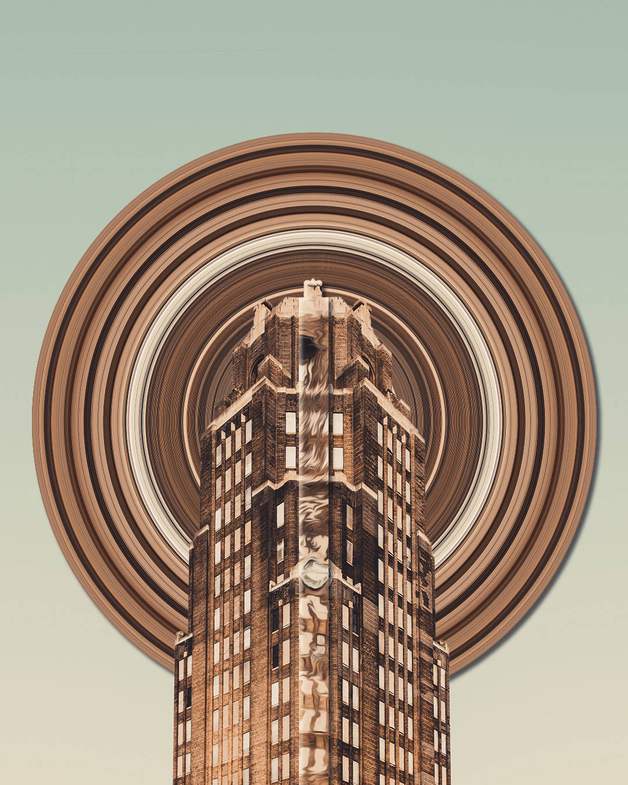
 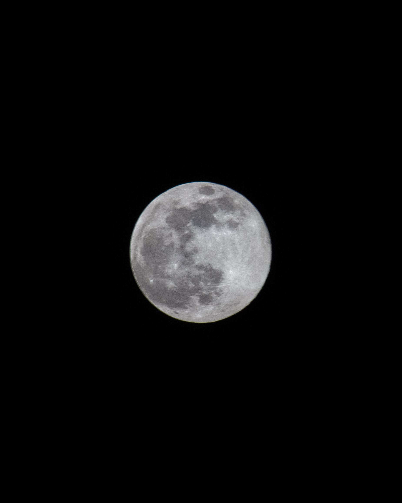
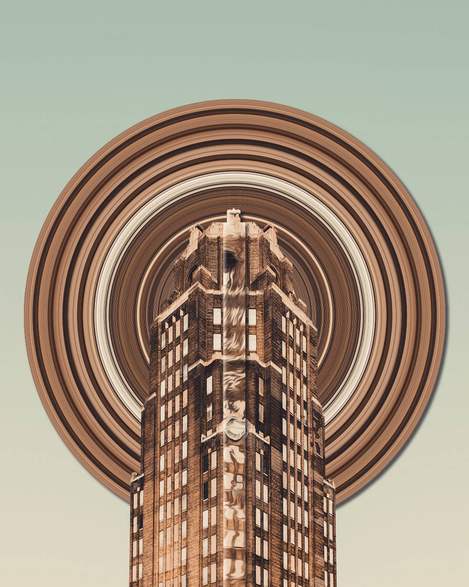
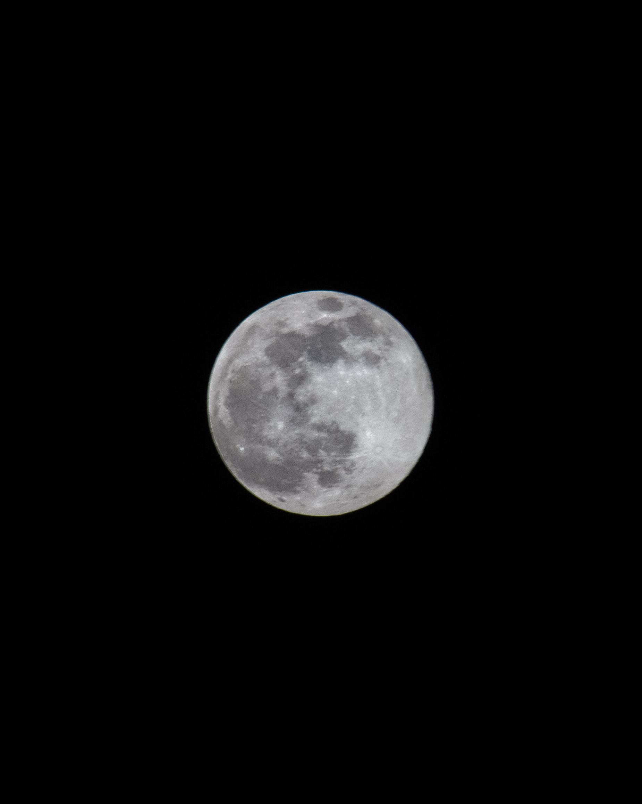
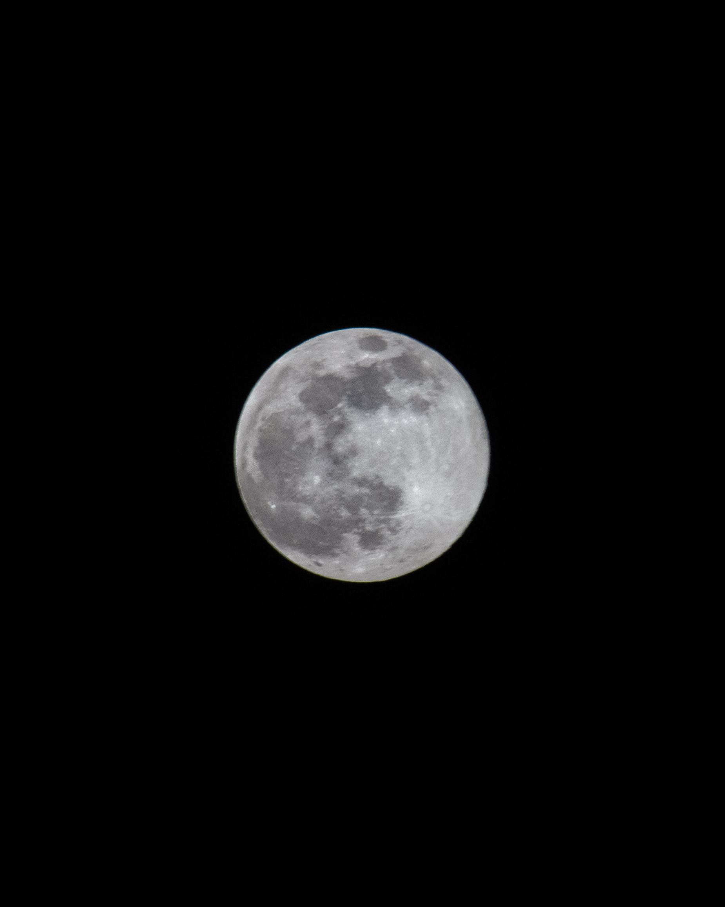
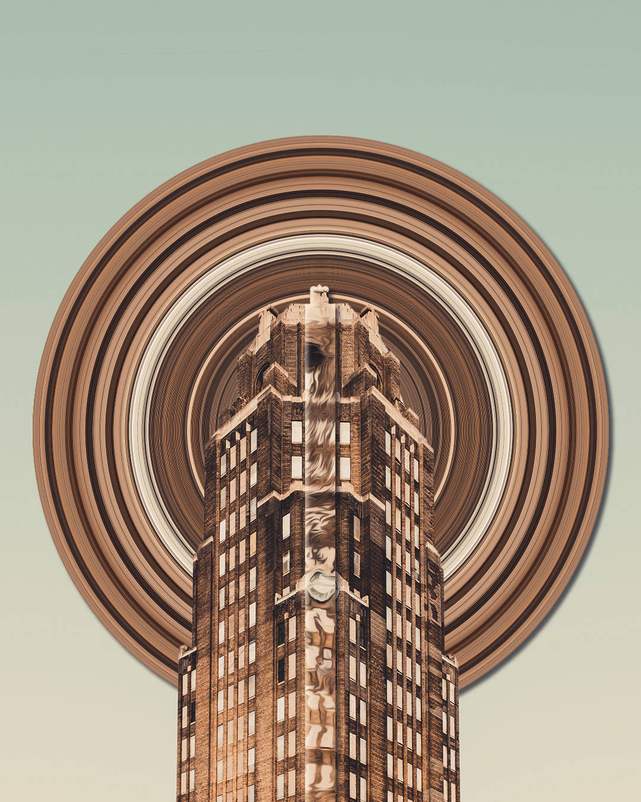
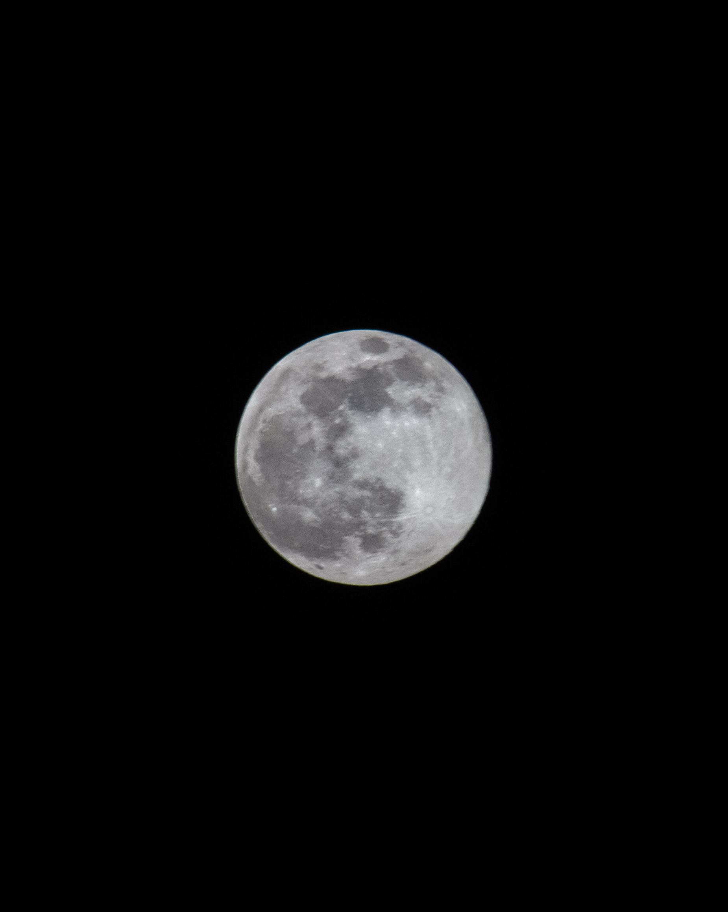